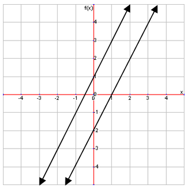
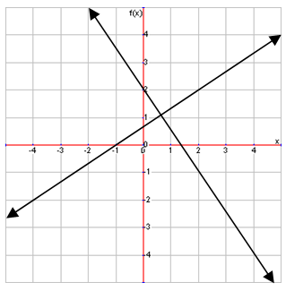
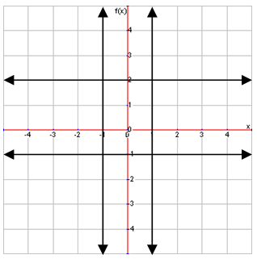

Parallel Lines
You may have learned about parallel lines line before, and you may remember that they are lines that never intersect each other. Now we will define them using our linear equations. Parallel lines are lines that do not lie on top of each other but have the same slope. These are an example of parallel lines:
As you can see, these two lines could extend out forever and never intersect. The easiest way to identify parallel lines is by checking their slopes because parallel lines always have the same slope. You should not just look at the graph and make a guess, because lines that look parallel may actually have slightly different slopes.
Perpendicular Lines
Perpendicular lines can be considered the opposite of parallel lines: they intersect each other at right angles, or 90° angles. Their slopes will be opposite or negative reciprocals, meaning that they have the opposite sign and are reciprocals of each other. Here’s an example:
Using Parallel and Perpendicular Lines
One thing you will need to learn to do is how to come up with equations that are either parallel or perpendicular to a given line. For example, try writing an equation that is parallel to the line \(y=\frac{3}{4} x+1\).
To do this, we need a line with the same slope, which is \(\frac{3}{4}\). To write this in slope-intercept form, we also need a different y-intercept (having the same y-intercept would mean we have a same line), so we can use any other y-intercept for our equation. For example:
\[
y=\frac{3}{4} x-2\]
As you can see, the slopes are the same, but the y-intercepts are different.
Writing equations for perpendicular lines is very similar to writing equations for parallel lines, but this time all you need is the slope. Simply change the slope to its opposite reciprocal, and you have the equation for a perpendicular line. For example, write the equation for the line perpendicular to \(y=3x+4\).
We just need to change the slope and we have our answer:
\[y=-\frac{1}{3} x+4\]
It does not matter what you have as the y-intercept, so long as the slope is correct.
Parallel and Perpendicular Horizontal and Vertical Lines
Because horizontal and vertical lines do not have regular slopes, they also cannot be dealt with normally regarding parallel and perpendicular lines. The first thing to know is that horizontal lines (zero slope) are always parallel to other horizontal lines, as are vertical lines. Also, horizontal lines and vertical lines are always perpendicular to each other. Here are examples of horizontal and vertical parallel and perpendicular lines: